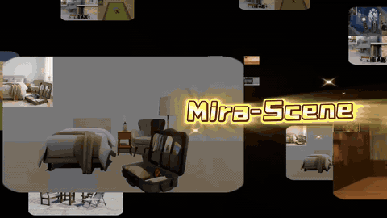
Mira-Scene: Pixel-Aligned Layouts for Generative 3D Scene Reconstruction
arXiv, 2026
"Reconstruct a coherent 3D scene from a single image — layouts as pixel-aligned correspondences."
I am a PhD student at the University of Hong Kong (HKU), supervised by Prof. Xiaojuan Qi. Before that, I received my master's degree from the University of Chinese Academy of Sciences (UCAS), supervised by Prof. Lin Gao, and my bachelor's degree from the University of Science and Technology Beijing (USTB).
I'm confirmed that visual understanding plays a key role in advancing intelligence. I am currently exploring: (1) the combination of visual intelligence and language intelligence — how to strengthen visual understanding within the language model / next-token-prediction paradigm (e.g., VA/VLA in Embodied AI or Computer Use); and (2) how visual intelligence can emerge from the native visual modality (e.g. in-context learning in video generation).
I am actively seeking industry roles. Feel free to contact me.

arXiv, 2026
"Reconstruct a coherent 3D scene from a single image — layouts as pixel-aligned correspondences."
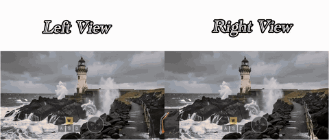
CVPR, 2026
"A stereo world model you can drive with a camera."
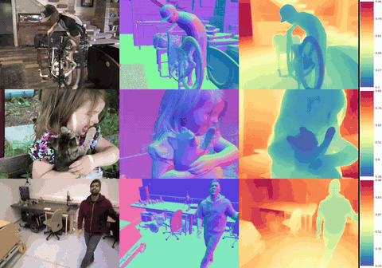
arXiv, 2025
"Turn a video diffusion model into a consistent geometry estimator."
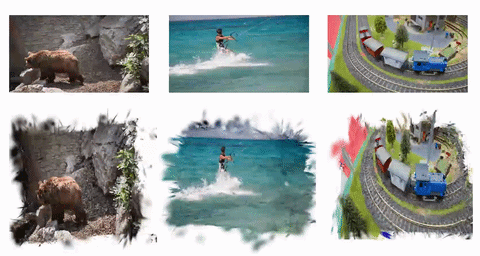
NeurIPS, 2024
"A video representation for effortless tracking, video feature fusion, and editing!"
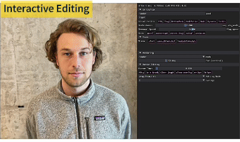
CVPR, 2024
"Dynamic reconstruction and interactive editing!"
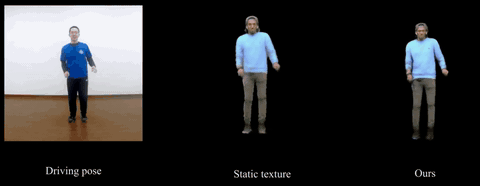
TPAMI, 2022
"Faithful dynamic cloth details in pose transfer — from a monocular video of the target person."
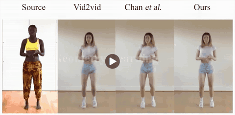
TPAMI, 2022
"Motion transfer grounded in a reconstructed 3D human model."
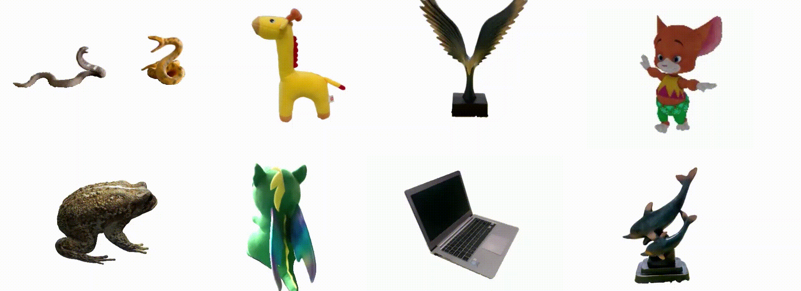
CVPR, 2022 Code Developer & Project Lead
"Edit a NeRF like a mesh — no retraining needed."
(as a core contributor)
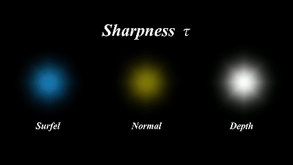
CVPR, 2025
"Explore beyond Gaussian kernels! A flexible general kernel splatting."
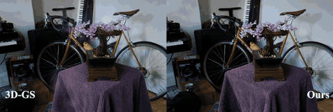
NeurIPS, 2024
"Beyond spherical harmonics: anisotropic specular appearance for 3D Gaussian Splatting."
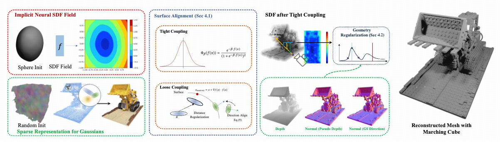
SIGGRAPH Asia (TOG), 2024
"An implicit SDF living inside 3D Gaussians, optimized together."